Модель реального рудника KAZ Minerals в Павлодарской области — от взрывного блока до концентрата двух фабрик. Начальник смены видит, куда везти глинистую руду и окупится ли ремонтная бригада, в тоннах меди и тенге — до распоряжения.
make mine → http://localhost:8088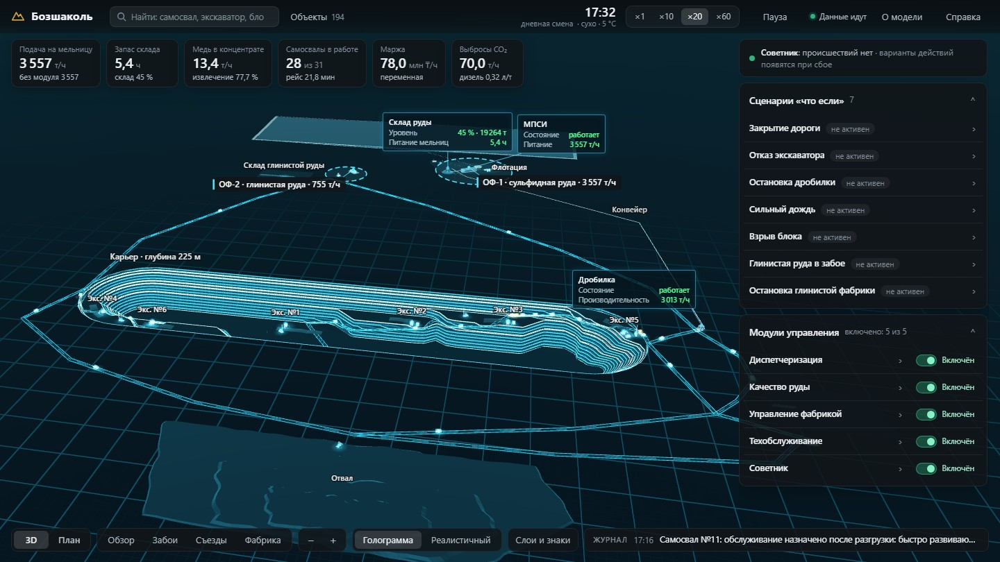
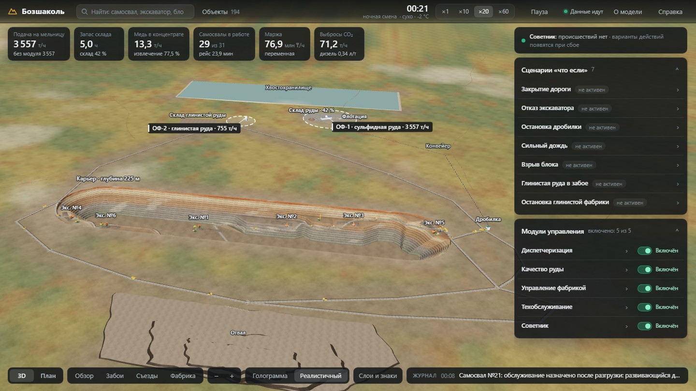
Своими словами команды — раздел Concept в SUBMISSION.md.
Верх месторождения — кора выветривания с каолинизированной рудой. Её перерабатывает отдельная фабрика ОФ-2, где руду отмывают от глины; в 2024 году глинистая руда — 17,1 % добытой (6,1 из 35,5 млн т). ОФ-2 извлекает меди меньше, чем ОФ-1; глина в питании самой ОФ-1 тоже снижает извлечение — насколько, для Бозшаколя не опубликовано, в модели это допущение.
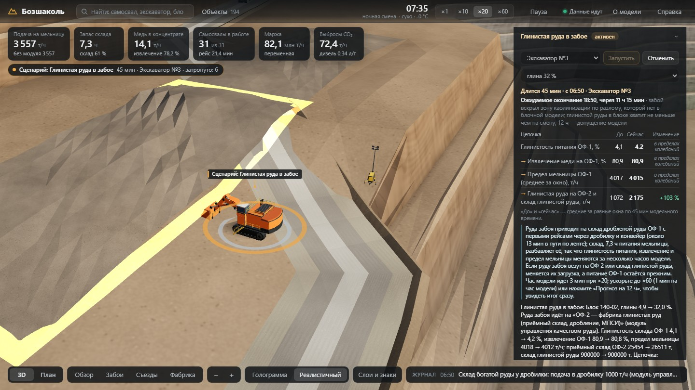
Двойник имеет тип, родителя, постоянные связи и признаки с единицами; связи, которые меняются (куда едет самосвал, что копает экскаватор, куда идёт руда блока), — тоже признаки.
| Группа | Типы и число |
|---|---|
| Карьер | карьер 1, уступы 15, блоки 52, буровые станки 4, экскаваторы 6 |
| Дороги | узлы 19, участки 22 |
| Транспорт | самосвалы 31, заправка, мастерская |
| ОФ-1 | дробилка, конвейер, склад руды, измельчение, МПСИ, шаровые мельницы, флотация |
| ОФ-2 | фабрика, обесшламливание, флотация песков и шламов, склад глинистой руды |
| Площадка | рудные склады 2, отвал, концентрат, хвостохранилище, подстанция, погода, рудник |
| Служебные | модули 5, сценарии 7, слоты прогноза 10, журнал 1 |
mine/model/build_twins.py; геометрия и состояние — world.yaml; числа — params.yaml._parents — иерархия: рудник → карьер → уступ → блок; станки и экскаваторы → карьер; обесшламливание и флотация ОФ-2 → ОФ-2.links — две цепочки: crusher → conveyor → stockpile → mill-sag → mill-ball → flotation и clay-stockpile → clay-plant → desliming → clay-flotation, обе → concentrate, tailings; дорожный граф; погода действует на все 22 участка.truck.assigned_loader, route; loader.block; у блока clay_pct и destination; scenario.affected; рядом — кто задал рычаг (…_source).// GET /api/2/things/kz.bozshakol:truck-05 (фрагмент)
"_parents": "kz.bozshakol:mine",
"links": {"home_loader": "…:loader-01",
"workshop": "…:workshop"},
"assigned_loader": {"properties":
{"value": "kz.bozshakol:loader-02"}},
"assignment_source": {"properties":
{"value": "dispatch"}}
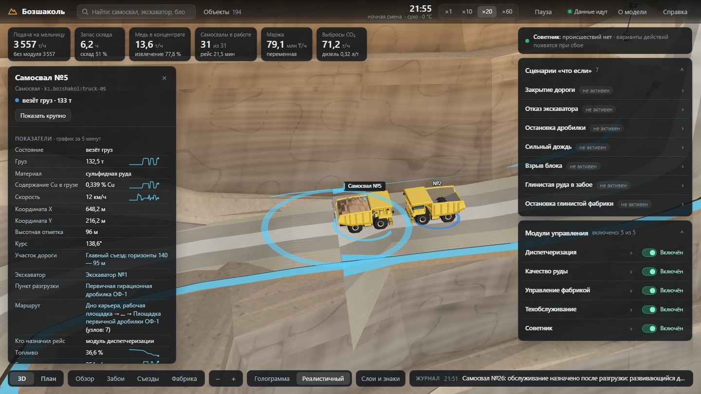
http://localhost:8088/#/twin/truck-05; JSON — /ditto/api/2/things/kz.bozshakol:truck-05.Калибровка — без модулей: 7 суток модели (mine/tests/test_soak.py), пересчёт на год при 92 % времени работы фабрик, против отчёта KAZ Minerals за 2024 год. Извлечение рудника не задано: оно получается из двух фабрик. С модулем фабрики ОФ-1 идёт на 3 557 т/ч — средней 2024 года — и лишь пиками до 3 900 т/ч, не дольше 2 ч за смену: за смену не выше 3 614 т/ч.
| Показатель | Модель без модулей | Бозшаколь | Источник |
|---|---|---|---|
| Руда, переработанная за год | 34,75 млн т | 34,755 млн т | KAZ 2024, с. 5 |
| ОФ-1 / ОФ-2 | 3 557 / 755 т/ч | 28 / 7 млн т в год | разрешения, ecoportal |
| Содержание меди в питании | 0,41 % | 0,40 % | KAZ 2024 |
| Извлечение по руднику | 78,6 % | 78,1 % | KAZ 2024 |
| Извлечение ОФ-1 / ОФ-2 | 81,3 / 67,3 % | ≈81,1 / 66,5 % | расчёт по меди ОФ-2, IV кв. |
| Медь в концентрате за год | 111,1 тыс. т | 109,6 тыс. т | KAZ 2024 |
| Доля глинистой руды в добыче | 16,9 % | 17,1 % | KAZ 2024, расчёт |
| Горная масса, на которую рассчитан парк | 59,1 млн т | 60,4 млн т (план) | ecoportal 29174 |
| Удельная энергия измельчения | 17,65 кВт·ч/т | 17,71 кВт·ч/т | расчёт, проект 2014 |
| Готовность самосвалов | 87,8 % | 85 % | расчёт парка; лучшие 92–94 % |
| Баланс горной массы и меди | 0,0000 т | — | замыкается за 7 суток |
| Влияние глины на ОФ-1 | ×0,5 | ×1 | ×1,5 |
|---|---|---|---|
| Извлечение рудника, 7 суток | 78,5 % | 78,6 % | 78,6 % |
| Медь за год | 111,0 | 111,1 | 111,1 тыс. т |
| Глинистый забой, есть сульфидный блок | шихта ОФ-1* | перевести | перевести |
| Глинистый забой, блока нет | шихта ОФ-1* | ничего | ничего |
| ОФ-2 стоит 6 ч / 1,5 ч | бригада / ничего | то же | то же |
sensitivity_clay.py). * При ×0,5 выгоднее везти руду забоя в шихту ОФ-1 даже при 21 % глины: +13,9 ± 4,6 млн ₸ при −1,0 т меди; перевод экскаватора +6,9 ± 4,6 — в пределах разброса (при ×1 +15,3, при ×1,5 +23,8).docs/mine/clay-literature.md) подтверждает направление влияния глины, но не величину: коэффициентов и порогов в ней нет.docs/mine/parameters.md.Всё, что видно, приходит из двойников: геометрия — из атрибутов geo и spec, состояние — из признаков, связи — из links. Стиль по умолчанию — техника и фабрики светящимся стеклом; цвет — состояние; цифры панелей обновляются раз в секунду.
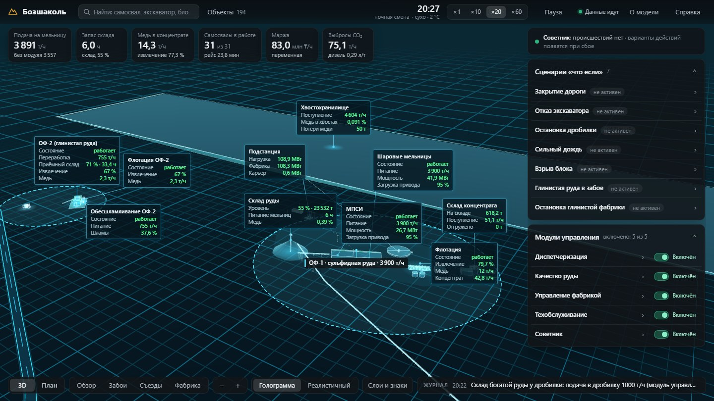
?view=plan — план; #/twin/<имя> — объект; видеокарта не нужна.Caterpillar 785C, Hitachi EX3600, Sandvik D55SP, дробилка, корпус мельниц, флотация, сгустители, конвейер, прожекторы и ОФ-2 построены Python-скриптами в Blender без интерфейса (tools/blender/). Солнце, небо и погода — по модельному времени.
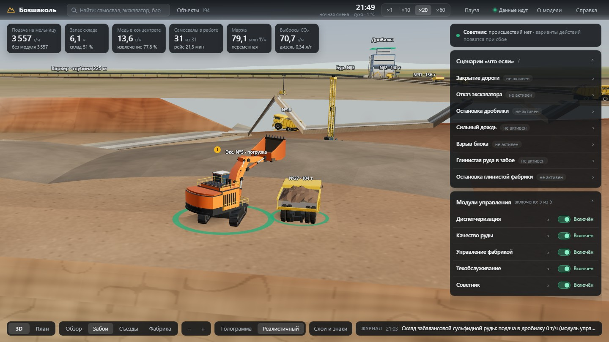
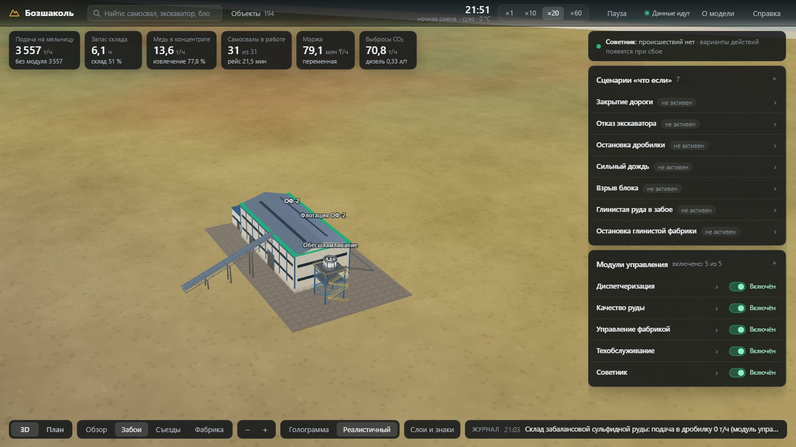
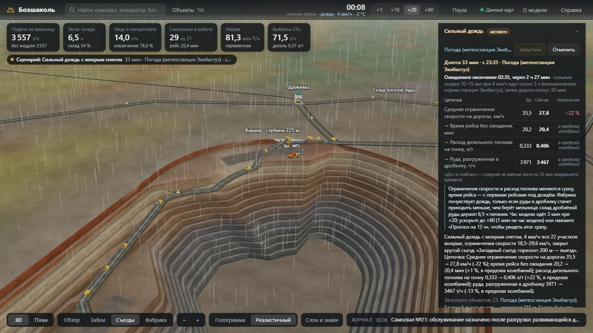
?style=realistic&time=12:00 — освещение полудня (часы на снимках — модельное время).Порогов глины KAZ Minerals не публикует, поэтому все они — допущения с объяснением (params.yaml, группы clay и clay_plant). Опубликованное получается из модели: доля глинистой руды — 16,9 % (в 2024 году 17,1 %), извлечение рудника — 78,6 % (78,1 %).
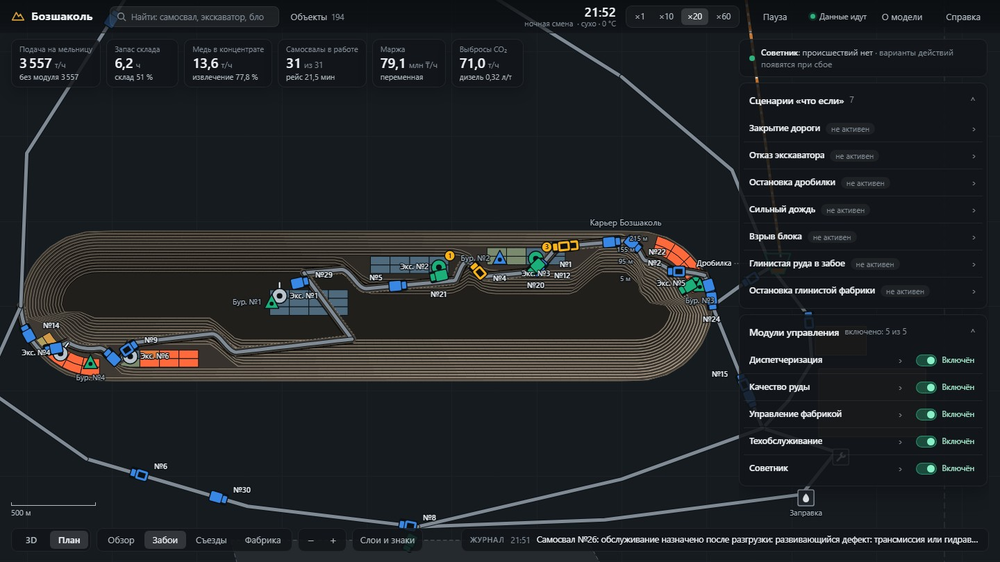
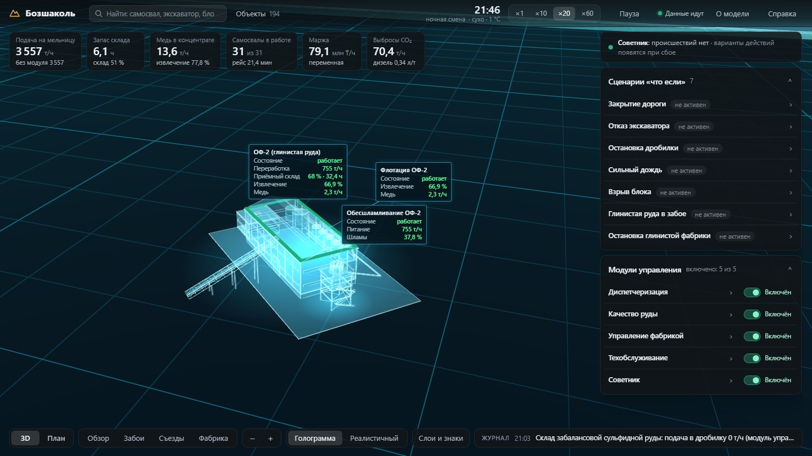
clay_pct: фон сульфидной руды 3 %, каолинизация убывает с глубиной, зоны по разломам, усиление на западном торце. Глинистая руда — от 15 % глины, богаче сульфидной в 1,2 раза.| Глина в питании ОФ-1 (влияние — допущение) | Извлечение ОФ-1 | Пропускная способность |
|---|---|---|
| 3,4 % — обычная сульфидная руда | опорное, 81,1 % | по мощности |
| 8 % — предел модуля качества руды | −2,8 пункта | −9 % |
| ≈20 % — руда глинистого забоя в шихте | −10,0 пункта | −33 % |
#/twin/clay-plant; щелчок по плитке → «Глина в питании ОФ-1», «ОФ-2: переработка», «ОФ-2: извлечение».Сценарий меняет только свою подсистему, дальше всё следует из модели. Карточка показывает ожидаемое окончание с обоснованием и четыре звена цепочки «до → сейчас» за равные окна.
| Сценарий | Ожидается | Цепочка в карточке |
|---|---|---|
| Глинистая руда в забое | 12 ч | глина в питании ОФ-1 → извлечение ОФ-1 → предел мельницы → руда на ОФ-2 и склад |
| Остановка глинистой фабрики | 6 или 3 ч | переработка ОФ-2 → приёмный склад → руда на склад глинистой → медь ОФ-2 |
| Остановка дробилки | 8 или 3 ч | дробилка → руда на рудные склады → запас склада, ч → питание мельницы |
| Отказ экскаватора | 8 ч | выемка → очередь на рейс → руда в дробилку → содержание меди |
| Закрытие дороги | 6 ч | путь с грузом → время рейса → руда в дробилку → запас склада, ч |
| Сильный дождь | 3 ч + 30 мин | ограничения скорости → рейс без ожидания → дизель на тонну → руда в дробилку |
| Взрыв блока | 20 + 15 мин | выемка → время рейса → взорванная масса → руда в дробилку |
activate / cancel; затронутые двойники — признак affected.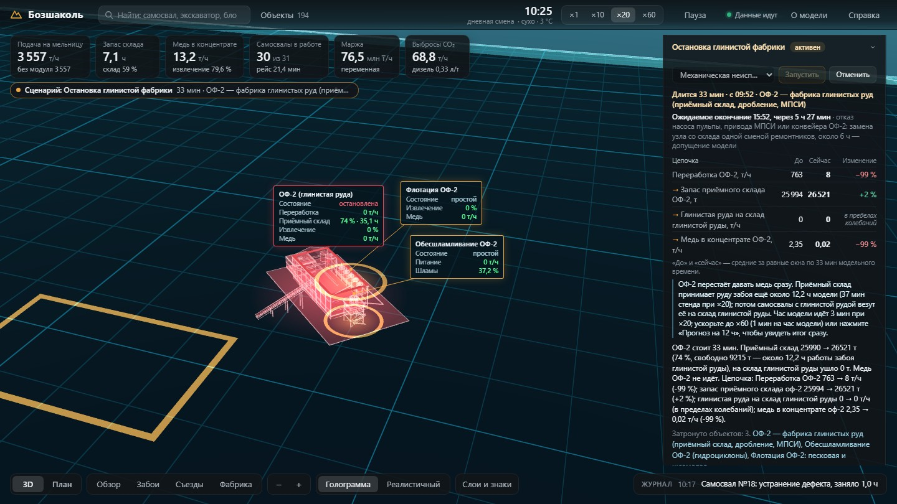
Прогнозный двойник: показывает будущее до того, как принято решение. Забой экскаватора №3 вскрыл зону каолинизации, глина 32 %. Советник берёт копию рудника в его нынешнем состоянии, проживает на ней следующие 12 часов для каждого варианта (три парных повтора) и сравнивает варианты, пока начальник смены ещё ничего не сделал; рекомендует, только если выигрыш больше двух стандартных ошибок.
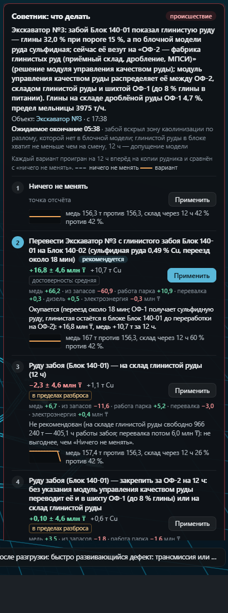
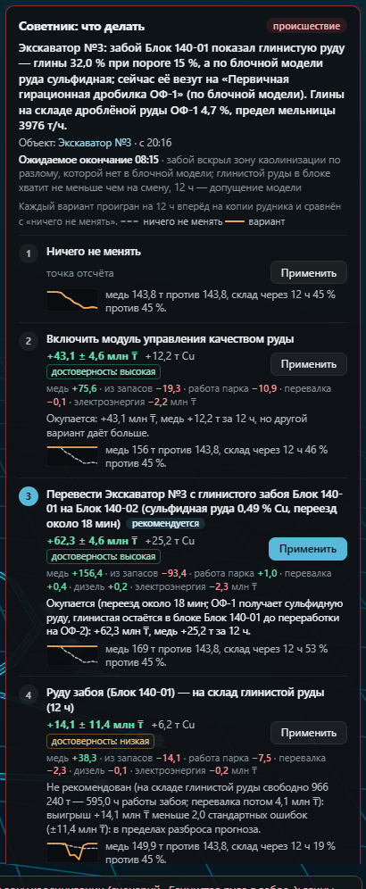
| Вариант, 12 ч | Модули вкл. | Качество выкл. |
|---|---|---|
| Перевести экскаватор на свободный сульфидный блок 140-02 | +16,8 ± 4,6 +10,7 т | +62,3 ± 4,6 +25,2 т |
| Включить модуль качества руды | — | +43,1 ± 4,6 |
| Руду забоя — на склад глинистой руды | −2,3 ± 4,6 | +14,1 ± 11,4 |
| Закрепить руду забоя за ОФ-2 (модуль ведёт её и в шихту ОФ-1) | +0,1 ± 4,6 | — |
test_advisor). Оба ответа держатся на допущении о глине: при вдвое меньшем её влиянии выгоднее шихта (слайд 5).Вторая бригада с подрядчиком сокращает оставшийся ремонт в 0,6 раза и стоит 1,1–1,3 млн ₸. Советник знает ожидаемое окончание ремонта и сравнивает его с тем, что теряет фабрика: ОФ-2 — медь каждый час простоя, ОФ-1 — только когда кончится склад дроблёной руды.
| Стенд, 22.10.2026 | Бригада, за 12 ч | Рекомендация |
|---|---|---|
| ОФ-2: механическая неисправность, 6 ч | +31,9 ± 4,6 млн ₸, +5,8 т | вторая бригада |
| ОФ-2: забивка гидроциклонов, 3 ч | +15,1 ± 4,6 млн ₸, +2,8 т | вторая бригада |
| ОФ-2: засор пульпопровода, 1,5 ч | +7,5 ± 4,6 млн ₸ | «Ничего не менять» |
| Дробилка: неисправность, 8 ч; склад на 5,3 ч | +135,7 ± 4,6 млн ₸, +23,3 т | вторая бригада |
| Дробилка: заклинивание, 3 ч; склад на 5,3 ч | −0,2 ± 4,6 млн ₸ | «Ничего не менять» |
| Дробилка: заклинивание, 3 ч; склад 20 % (тест) | +47,9 ± 4,6 млн ₸, +7,6 т | вторая бригада |
test_advisor; числа стенда меняются от прогона к прогону вместе с состоянием рудника.test_advisor).repair_crews = 2, пуск раньше, цена — в «ресурсах смены» рудника.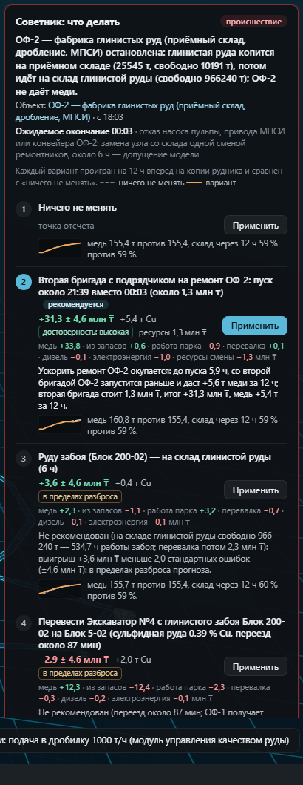
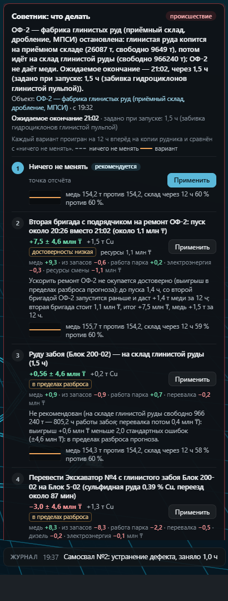
Модуль — отдельный сервис: видит рудник через события двойников, действует живыми сообщениями Ditto, пишет свой двойник. Эффект — 7 суток модели без модуля и с ним (test_modules.py) и прогноз «с модулем / без» на стенде каждые 3 часа модели: тот же движок «две ветки будущего», которым советник проверяет варианты.
| Модуль | Рычаг | Мера за 7 суток: без → с модулем | Цена и оговорки |
|---|---|---|---|
| Диспетчеризация | assign | вскрыша 532 → 543 тыс. т при той же переработке; очередь у дробилки при полном складе 298 → 37 самосвало-мин | ожидание на рейс 0,65 → 1,84 мин |
| Качество руды | set-destination, set-reclaim | содержание в полосе 0,36–0,42 %: 58 → 100 % времени; глина в питании ОФ-1 ≤ 8 % | медь −2,2 %: богатая руда на складе |
| Фабрика | set-feed-rate | с тремя другими модулями медь 2 314 → 2 336 т (+0,9 %), переработка ОФ-1 +1,5 %: 3 557 т/ч и пики до 3 900 по 2 ч за смену, за смену ≤ 3 614 т/ч; остановок 0 | один: +0,2 % — склад редко от 65 %; извлечение ОФ-1 81,2 → 81,0 % |
| Техобслуживание | schedule-service | готовность самосвалов 87,8 → 93,4 %, отказов 169 → 18 | заявок в мастерскую 3 → 181 |
| Все четыре | медь 2 316 → 2 336 т (+0,9 %), готовность 87,8 → 93,4 % | часть меди уходит на склады |
| На стенде, 22.10.2026: медь и итог с поправкой за 12 ч «с модулем / без» | Проверка стенда, прогон 1 | Прогон 2 |
|---|---|---|
| Фабрика (склад 50–60 %: прибавка, если в 12 ч он дойдёт до 65 %) | +1,8 т, +10,2 млн ₸ | 0,0 т, 0,0 млн ₸ |
| Диспетчеризация | +0,1 т, +2,2 млн ₸ | −0,2 т, +1,5 млн ₸ |
| Качество руды | +1,3 т, −0,8 млн ₸ | +0,5 т, −0,2 млн ₸ |
| Техобслуживание | −0,3 т, +1,6 млн ₸ | −0,1 т, +1,9 млн ₸ |
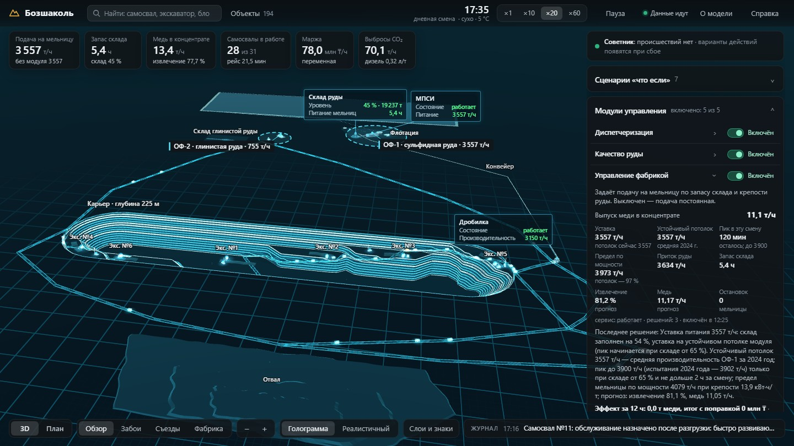
Ни один компонент рудника не читает состояние другого в обход Ditto: симулятор получает команды живыми сообщениями, модули видят рудник через двойники, страница — через шлюз к Ditto и InfluxDB.
telemetry/<имя>opentwins/twin/events/…default, mqtt_consumer, тег thingId…/inbox/messages/…# двойник через шлюз страницы, без пароля curl localhost:8088/ditto/api/2/things/kz.bozshakol:truck-05 # телеметрия и события в MQTT (localhost:1883) mosquitto_sub -t 'telemetry/truck-05' mosquitto_sub -t 'opentwins/twin/events/kz.bozshakol/truck-05' # история в InfluxDB: поле value_<признак>_properties_value curl 'localhost:8088/influx/query?thing=kz.bozshakol:truck-05&range=5m'
things/twin/commands/modify с полным набором признаков.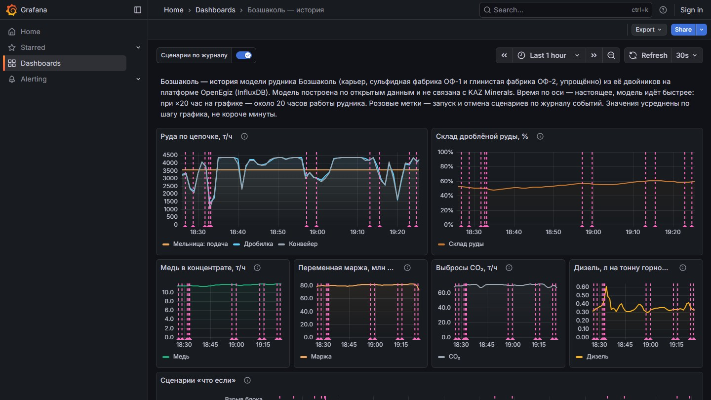
Ubuntu 24.04 с Docker Engine и Compose v2. Первый запуск скачивает около 6 ГБ образов и занимает 7–15 минут; повторный при скачанных образах — около полутора минут.
sudo apt-get update && sudo apt-get install -y make curl
make mine
# … Bozshakol mine model is running: http://localhost:8088
| Адрес или команда | Что там |
|---|---|
| http://localhost:8088 | рудник в 3D, плитки, объекты, сценарии, модули, советник, журнал |
?view=plan · ?style=realistic | сразу план · реалистичный стиль |
| http://localhost:3000/d/bozshakol-history | Grafana «Бозшаколь — история», без входа |
make mine-check | сквозная проверка стенда, около 2,5 мин |
make mine-test | 210 тестов модели, глины, модулей, ресурсов смены, прогноза и советника (около 12 мин) |
docs/mine/parameters.md (все числа с источниками), docs/mine/ARCHITECTURE.md (устройство и контракты сообщений).